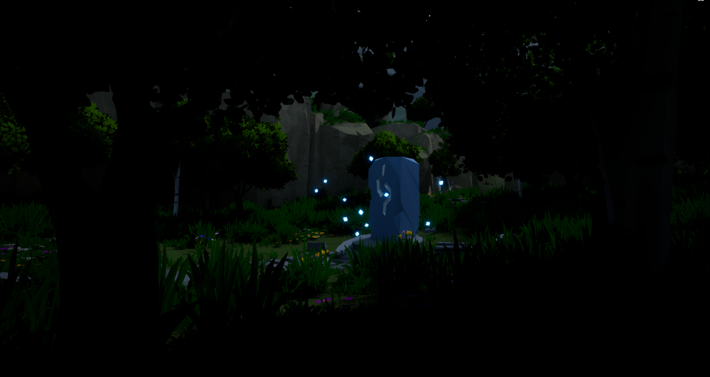

A World Without Magic
Status: Completed
In A World Without Magic, the world has lost all traces of magic — its landscapes are lifeless, its histories forgotten. You are the last wielder of the Light, able to briefly illuminate echoes of what once was. Using this fading gift, you reveal long-lost structures and fragments of memory scattered across a forgotten land. Your presence is a contradiction — the last ember of a world without magic.
